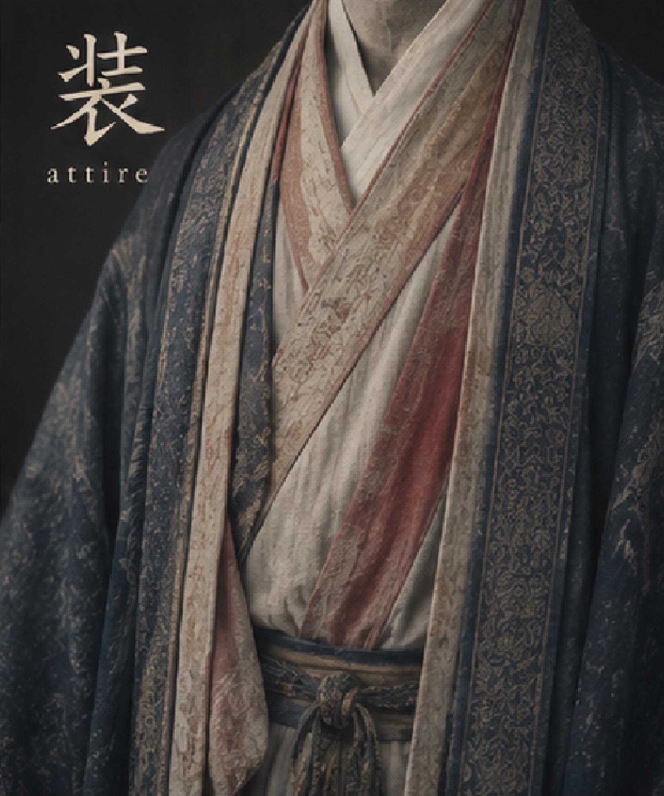
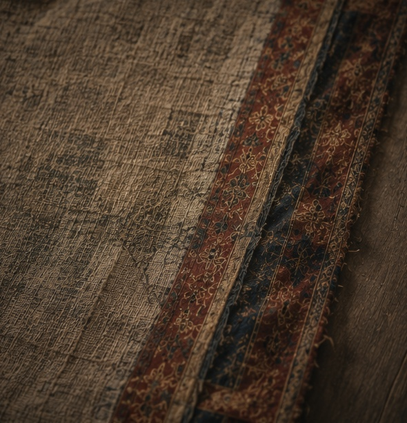
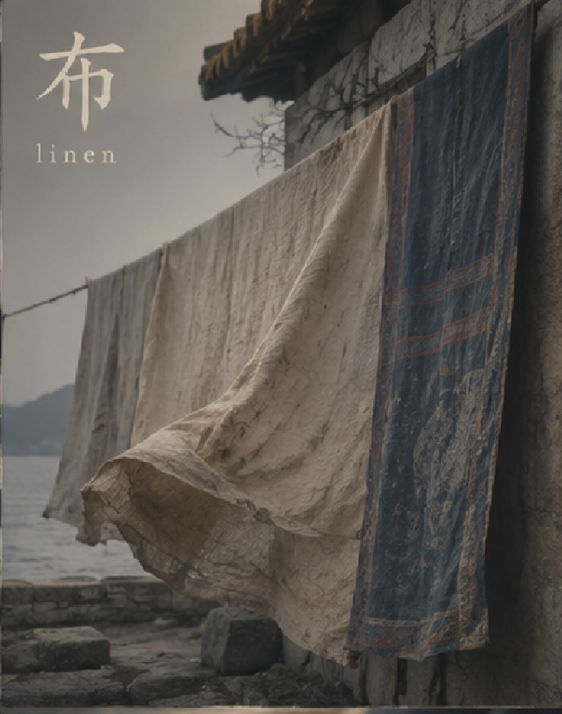

💡 Tip: Click the featured kanji to view stroke order animations

柔らかな布に包まれ、
小さな命が夜へ現れる。
Wrapped in quiet cloth,
a small life enters the night.

深く埋められた石は、
見えずとも支え続ける。
The buried stone below
supports what others will become.

祝いの衣の奥に、
静かな責任が宿る。
Behind ceremonial robes
rests the silence of responsibility.

風に揺れる布は、
人の暮らしを語っている。
Cloth moving in the wind
speaks quietly of human life.
切り分ける手の中に、
形と決断が生まれる。
Within the cutting hand
form and judgment appear together.

人は衣をまとうことで、
別の顔を世に見せる。
By putting on garments,
people reveal another face to the world.

表には見えぬ糸が、
静かに全てを支えている。
Hidden threads beneath the surface
quietly hold everything together.

崩れた壁の向こうにも、
まだ風は流れていた。
Even beyond broken walls,
the wind continued to move.

濡れた袖を握りしめ、
言葉のない夜を歩く。
Holding a rain-soaked sleeve,
one walks through a wordless night.

旗は霞の向こうへ消え、
道だけが空へ続いていた。
The banners vanished into mist,
while the road continued toward the sky.

人の祭りを真似しながら、
猿は笑いを集めていた。
Imitating human festivals,
the monkey gathered laughter.
初めての風は冷たく、
それでも心を開いていた。
The first wind felt cold,
yet the heart still opened toward it.

折り重なる布の中に、
手の温もりが残っている。
Within folded cloth
the warmth of hands still remains.

粗い織り目の向こうに、
昔の暮らしが眠っている。
Beyond the rough woven threads
old lives remain asleep.
静かな帆は風を待ち、
海はまだ朝を抱いていた。
The silent sail waited for wind,
while the sea still held the morning.
広げられた布のように、
景色は遠くまで続いていた。
Like cloth stretched open,
the landscape extended into distance.
旅人の帽子には、
長い道の埃が残る。
Dust from long roads
remains upon the traveler's hat.

幕が静かに揺れるたび、
別の物語が始まっていく。
Whenever the curtain trembled softly,
another story began.
揺れる幌の下で、
旅人たちは夜を越えた。
Beneath the moving canopy,
travelers passed through the night.
金糸の光の中で、
文明は静かに輝いていた。
Within the glow of golden thread,
civilization shimmered quietly.